Product-type groups, with a catch-all.
Categories were Bags, Pouches, Kids, and ETC. As the range grew into travel goods, fashion, and living products, the groupings stopped describing where an item belonged.
SNILLO STITCH is one of the lifestyle brands operated by Q&B International, my former employer. On the company's online team, I redesigned the brand's store structure and carried it through responsive layouts, Cafe24 implementation, and production QA.
Rebuilt SNILLO STITCH's category structure and homepage around how customers shop — five use-based product families, a dedicated collaboration entry, and reusable campaign modules — and shipped it on a live Cafe24 store, including a mobile tab bar the legacy site never had.
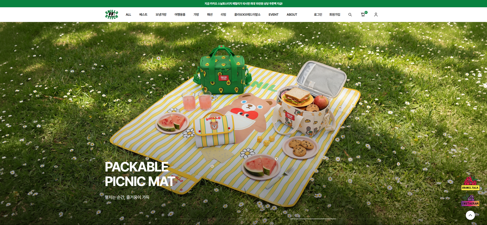
This is a real production redesign. The renewal runs on a purchased Cafe24 base skin; the information architecture, homepage modules, product-detail layouts, content surfaces, and mobile layout shown here were redesigned and implemented by me. The legacy-versus-renewal comparison was reconstructed from the two storefronts, and no outcome that would need analytics is claimed.
SNILLO STITCH had grown beyond a simple product storefront. As the range expanded across bags, travel goods, fashion, living products, promotions, and collaborations, customers needed a clearer sense of what to browse and where to go next.
The renewal focused on simplifying discovery, keeping the brand's friendly tone, and creating a reusable system that could support frequent product and campaign updates.
What I found when reviewing the legacy storefront, plus the platform constraint every decision had to respect.
Categories were Bags, Pouches, Kids, and ETC. As the range grew into travel goods, fashion, and living products, the groupings stopped describing where an item belonged.
Wallpaper downloads, an almost-sold-out block, and a keyword block sat beside product modules, diluting the path from browsing to a product page.
A three-slot pick module repeated one product, some slots were unfilled, and a Best Sellers tab could show only sold-out items.
Observed on the legacy storefront. Constraint: everything had to ship inside a live Cafe24 theme and stay editable by the store team.
The homepage comparison shows the shift toward a clearer product hierarchy, stronger merchandising, and a structured shopping path.
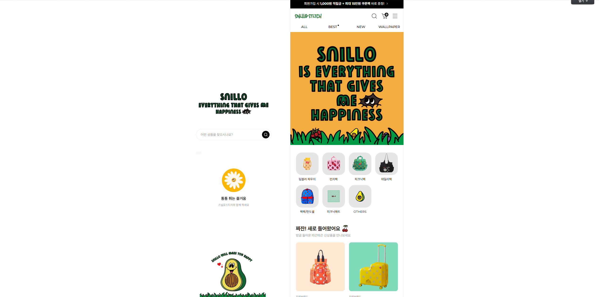
Replaced product-type groups (Bags, Pouches, Kids, ETC) with five use-based families — Cooler Bags, Travel, Bags, Fashion, Living — and gave collaborations their own entry.
Removed modules not tied to shopping and rebuilt the page around New, Pick, Collaboration, Best Sellers, and Promotion.
Replaced hashtag tabs, where a tab could show only sold-out products, with a single list; category browsing is handled by the main navigation.
Added a hero slider and dedicated Pick and Collaboration modules so campaigns can be swapped without touching the page structure.
Designed mobile as its own browsing context and introduced a bottom tab bar, which the legacy mobile layout did not have.
The renewal pairs the brand's friendly identity with a practical shopping structure: modules are easier to scan, campaign content is deliberate, and recurring sections are built to be updated week after week.
The homepage works as both a brand entry point and a navigation surface for shopping.
New launches get a clear entry point right below the hero, with a link to the full list.
A seasonal banner gives a guided way in, instead of a catalogue-only structure.
A single list gives customers a fast starting point without sold-out tabs.
Brand story and event content sit inside the shopping flow rather than beside it.
Mobile layouts prioritize product scanning, category entry, and campaign content in a narrower space. A bottom tab bar, new in the renewal, keeps the main destinations within thumb reach.
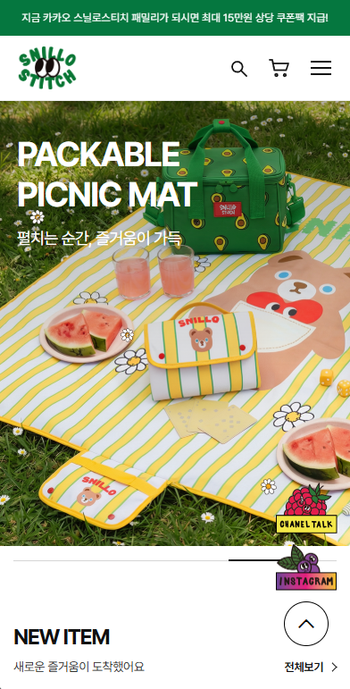
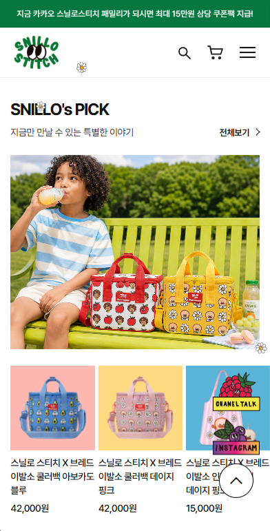
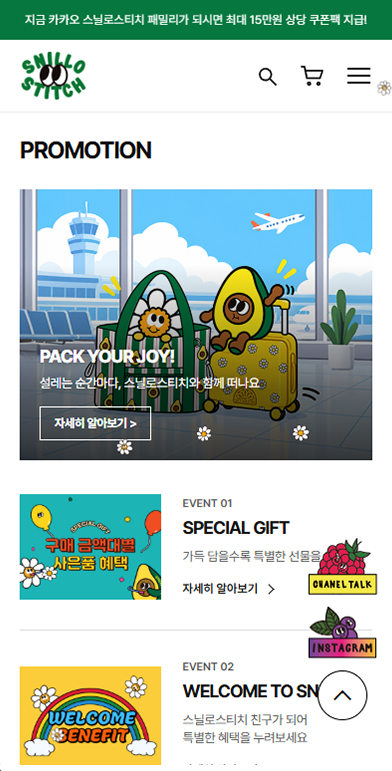
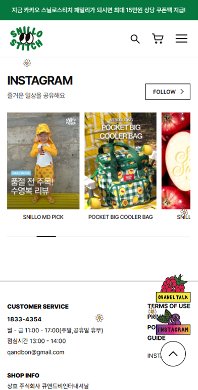
The renewed catalogue supports broader categories while keeping product cards readable across breakpoints.
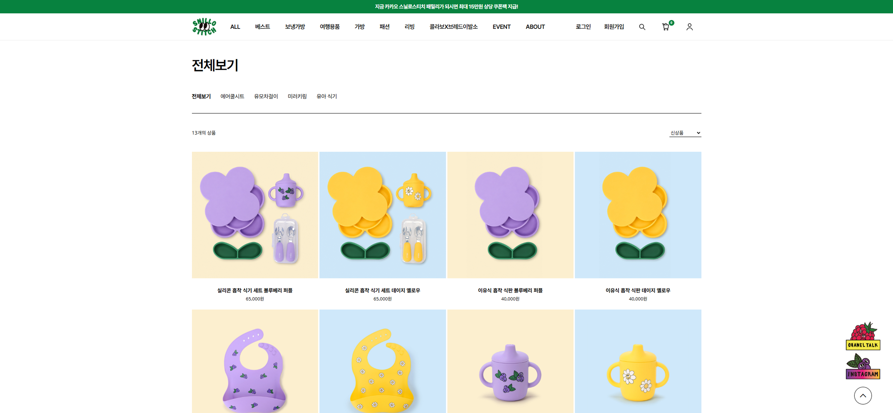
Both examples are bag-category pages, so the comparison focuses on structure, visual hierarchy, and information flow.


The two pages show different products within the same category, so compare the page structure rather than the product itself: how information, options, specifications, and visual storytelling are organized from top to bottom.
Promotion and collaboration content stays inside one system while remaining easy to update.

Promotion
Seasonal and campaign content tied to shopping.

Collaboration
Reusable content for character and partner collaborations.
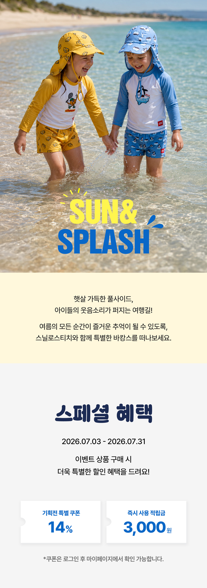
Brand Content
Lifestyle storytelling that supports the product range.
The design was built into a live Cafe24 store and had to stay maintainable for daily operations.
Built desktop and mobile layouts with breakpoint-specific hierarchy and interaction behavior.
Customized a purchased base skin inside a live CMS/theme environment rather than stopping at a static prototype.
Reviewed content updates, product states, responsive reflow, and production issues after launch.
Structured recurring commerce and campaign patterns for ongoing brand operations.
This case study does not attribute unverified conversion gains to the redesign. These are the signals I would use to check whether the new structure reduces friction.
Which modules move customers from browsing into shopping most effectively?
Can customers reach relevant products without unnecessary friction?
Where do customers hesitate between information, option selection, and purchase intent?
Do branded content modules support shopping, or are they skipped?
The shipped renewal gave the store a more structured system for discovery, promotions, collaborations, and responsive shopping.
Five use-based families and a separate collaboration entry replace type-based groups and a catch-all category.
New products, picks, best sellers, and promotions can be updated repeatedly without rebuilding the page structure.
Desktop and mobile are treated as different browsing contexts, with their own content density and a mobile tab bar.
The project connects structural UI/UX decisions to Cafe24 front-end implementation and live-site QA.
SNILLO STITCH shows how I worked on a brand renewal inside a live commerce operation at Q&B International — rethinking structure, then shipping and maintaining it.